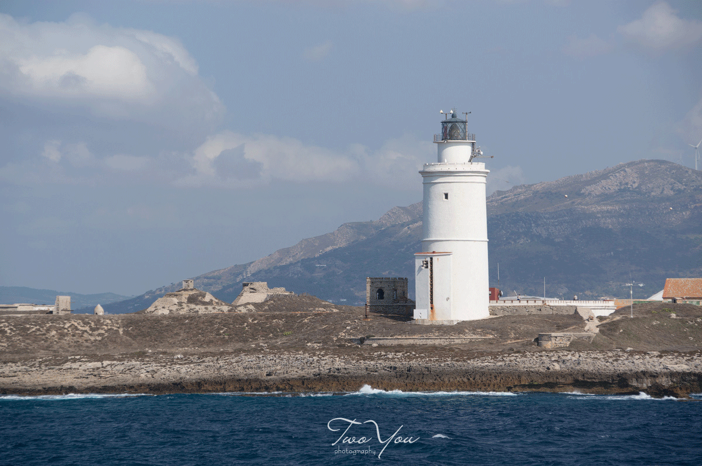

Обработка фотографий
Любая фотография может быть улучшена с помощью обработки изображений. Только посмотрите на этот пример.
Для удобства фотография "до" и "после" в формате GIF.

Для обработки нарисованных изображений лучше использовать формат PNG.
Для обработки фото лучше отдать предпочтение формату JPEG